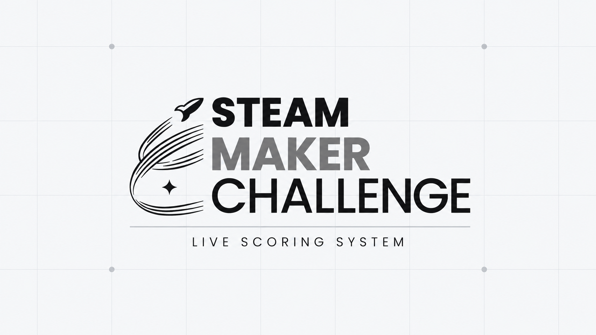

Proyecto
destacado
01
STEAM Maker Challenge Live Scoring System
Sistema de puntuación en tiempo real desarrollado para administrar competencias del STEAM Maker Challenge. Permite registrar equipos, gestionar enfrentamientos, controlar puntuaciones y mostrar resultados actualizados durante el desarrollo del evento.